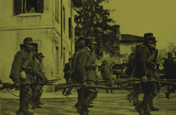

Memoria
Vissuti e Storie
Tenere vivi i fatti attraverso il mondo dei vissuti e quindi della gente comune è il grande merito di questo progetto, che agisce sulla doppia dimensione storica e di consapevolezza. Molte persone sono state coinvolte, con il proprio vissuto, con le proprie memorie dirette. Un progetto che sta riuscendo a far emergere una storia quotidiana fatta di persone e di luoghi, di relazioni e di vicende che sono alla base del nostro essere attuale e del territorio per come ora lo conosciamo.
«Tenere vivi i fatti attraverso il mondo dei vissuti e quindi della gente comune è il grande merito di questo progetto, che agisce sulla doppia dimensione storica e di consapevolezza.»
Francesco Martines
Sindaco di Palmanova · Comune capofila
Adriana Danielis · Vicesindaco di Palmanova

Truppe italiane in zona di retrovia · Friuli 1916–1918
Il Direttore Artistico
«OLTRECONFINE ha saputo finora confermare e moltiplicare una rete di legami tra persone andando oltre la tendenza imperante all'egocentrismo e al solipsismo, valorizzando le individualità in un viaggio che ci restituisce un bene comune non solo in senso strettamente storico ma in quello ben più ampio dell'esperienza culturale e umana.
Raccogliere, valorizzare e rendere comune un patrimonio di storie nel rispetto storico del punto di vista italiano e austriaco contribuisce alla costruzione di una coscienza e di una cultura europea.»
Francesco Accomando
Direttore Artistico · Oltreconfine